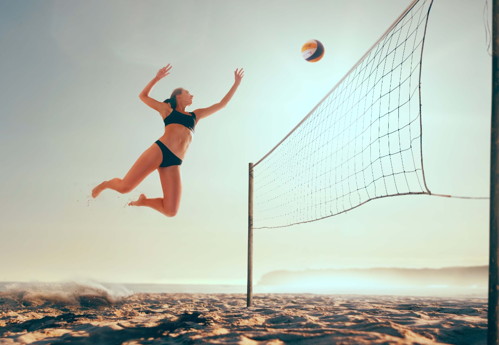
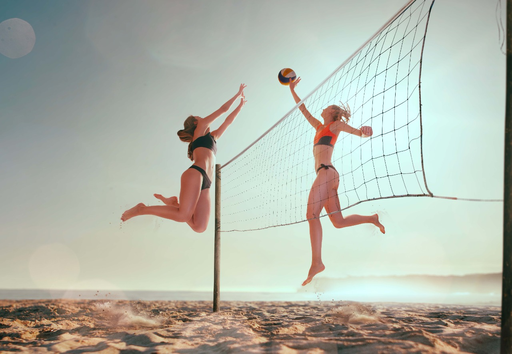
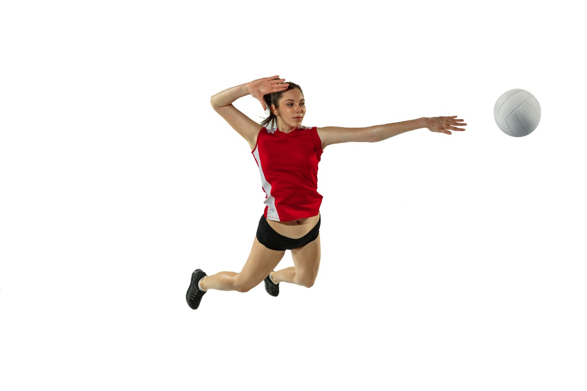
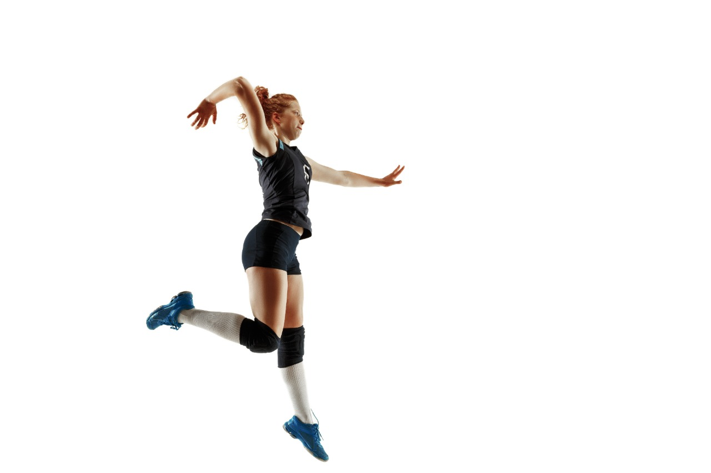
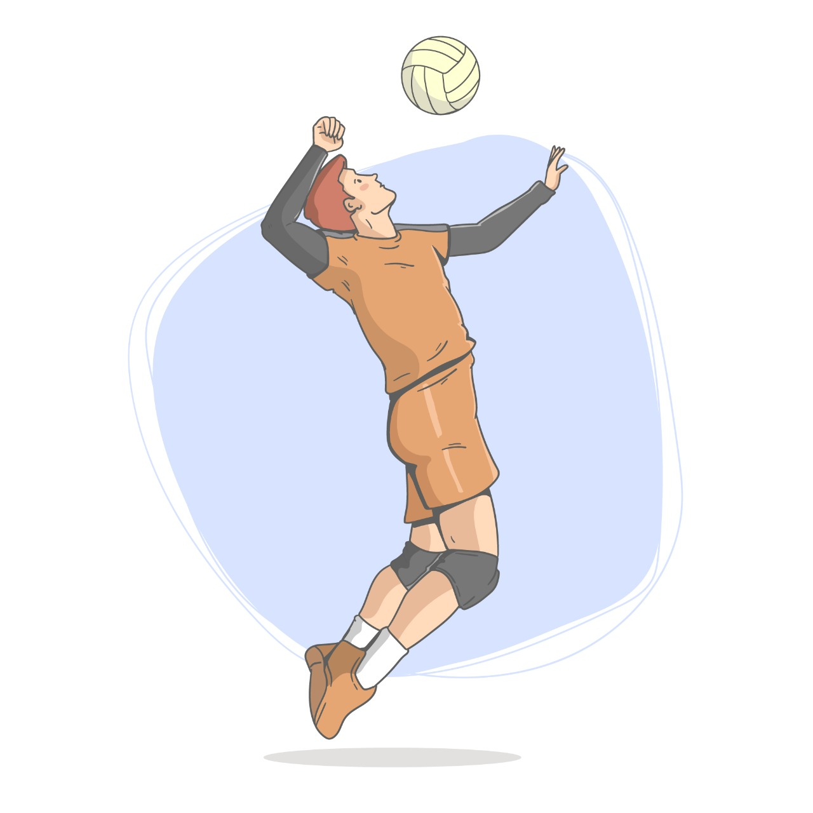
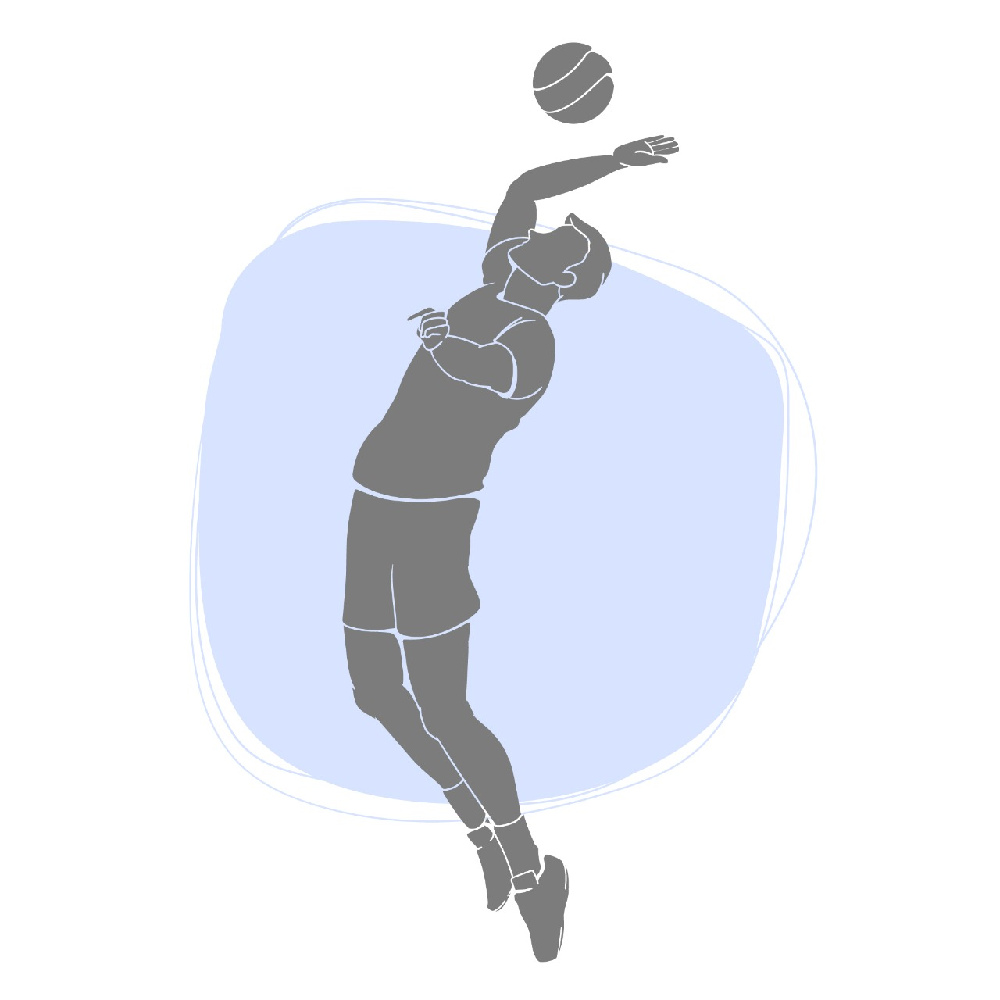

¿Cómo evoluciona la potencia muscular en adolescentes practicantes de voleibol?
Introducción
El voleibol es un deporte con alta integridad en la potencia en salto, que con lleva a varios parámetros de utilidad cómo sería su distancia vertical, su desempeño muscular en miembros inferiores y progresión de esfuerzos aeróbicos por lo que decidimos investigar acerca de cómo se desarrolla la potencia en adolescentes entre 12 a 18 años. A continuación, se encontrarán los documentos que se utilizaron para la investigación y una entrevista con un profesional internacional que nos habla sobre el tema.
Comparación de pruebas de potencia de miembros inferiores por dos métodos indirectos en voleibolistas categoría sub-18
Nos da un interesante test de salto vertical en el cual es viable como prueba física, para el voleibol moderno, que valora la potencia de piernas, ya que de esa manera agrega una integración para que el preparador físico pueda planificar un programa de fuerza-velocidad con la intención de mejorar sus prestaciones físicas en el terreno de juego. Agrega la necesidad de desarrollar en las voleibolistas una gran potencia, fundamentalmente en los miembros inferiores, aspectos que fue evaluado a diez atletas de voleibol categoría sub-18 de la Escuela Nacional de voleibol por métodos indirectos Lewis y Harman, a las que se les realizó un estudio transversal en la etapa de preparación física general. Como métodos empíricos se utilizaron la medición y los test indirectos para evaluar la potencia de salto. Se obtienen resultados satisfactorios en ambos test, fundamentalmente después de someter a las atletas a un sistema de ejercicios que se muestran con mayor nivel de información para el entrenador los valores de la potencia de Harman, ya que en este tiene en cuenta la acción de la aceleración gravitatoria que debe vencer en la fase de despegue. A partir de los resultados, se brindó una viabilidad de los cambios.
Enrique Lorenzo Henríquez Hernández
Leivis Osmani García
León
Lino Michel Valdés Cabrera
Valia Alina Crespo Almeida
2022
PODIUM
Influencia de la capacidad física de velocidad en la potencia de salto del voleibol escolar
Se da una importancia al entrenamiento integrado en la cual se evidencia la necesidad de implementar varios componentes de la preparación para lograr mayores rendimientos. Por lo que se reviste el método pliométrico para potenciar la habilidad motriz salto, pero otras capacidades como la velocidad pudieran influir directa o indirectamente. En tal sentido, se determina si la capacidad física de velocidad influye en la potencia de salto del voleibolista de categoría escolar. Se estudia la población de voleibolistas de la Unidad Educativa La Salle, (grupo 1 experimental: 26 estudiantes) y la Unidad Educativa Oswaldo Lombeyda (grupo 2 control: 25 estudiantes), género masculino y categoría 13-14 años. Los grupos se sometieron al mismo entrenamiento, excepto el grupo experimental que se le implementó una estrategia de trabajo con estímulos físicos, que prioriza cargas de velocidad para miembros inferiores.
Miguel Alexander Zapata Cuaspa
Karla Paola Ayala Vega
Leonardo Xavier Quintanilla Ayala
2021
PODIUM
Efecto del entrenamiento pliométrico en la fuerza explosiva de niñas puberes practicantes de voleibol
Nos habla sobre como un mismo entrenamiento puede generar una mejora en las capacidades de cada persona involucrada gracias a la diferencia en la fisiología muscular y las adaptaciones que cada individuo genere, así mismo nos indica que los periodos de descansos pueden generar efectos significativos en la mejora de la fuerza explosiva. Por otro lado, nos aclara que se debe tener en cuenta, tanto la maduración puberal, como la maduración biológica para los entrenamientos pliométricos buscando que tengan impacto en variables fisiológicas de potencia y fuerza máxima.
Vilela, Gustavo Caniuqueo-Vargas
Alexis Ramirez-Campillo
Rodrigo
Hernández-Mosqueira
Claudio da Silva, Sandro
2021
Retos: Nuevas Perspectivas de Educación Física,
Deporte y Recreación
Análisis del salto vertical de voleibolistas de primera categoría
Los métodos de pliometría nos permiten la mejora de la coordinación, de fuerza y de velocidad, le permite al voleibolista realizar aceleraciones más eficientes, que los cambios de dirección pueden realizarse con mayor prontitud, ser más explosivo en los movimientos balísticos, ser más hábil en la ejecución de los saltos y lanzamientos, en fin, ser más veloz en términos generales. Además de esto nos permite ver que el índice de fuerza reactiva (RSI) al utilizarse como medio de monitorear la carga, permite una planificación correcta del entrenamiento pliométrico y cumple un objetivo dentro de la preparación para los deportistas de voleibol, ya que se tiene en cuenta para la intensidad de los entrenamientos pliométricos, sino que el trabajo debe ser bien controlado ya que de no ser así puede ocasionar lesiones en los atletas.
José Carlos García Bohigas
Yumilka Daisy Ruiz Loaces
Ídolo
Gilberto Herrera Delgado
2021
PODIUM
Photobiomodulation therapy and NMES improve muscle strengthand jumping performance in young volleyball athletes: a randomized controlled trial study in Brazil
Nos da una comparación de viabilidad entre terapias de fotobiomodulación y NMES, que las pusieron aprueba en un entrenamiento del cuádriceps femoral para la ayuda de la potencia muscular en voleibolistas
Ronaldo Alves da Cunha
Carlos Eduardo Pinfildi
Alberto de
Castro
Pochini
Moisés Cohen
2019
Springer-Verlag London Ltd., part of Springer Nature.
Muscle Architectural and Functional Adaptations Following 12-Weeks of Stretching in Adolescent Female Athletes
Con este artículo podemos reconocer de forma rigurosa la evolución y los cambios fisiológicos y morfológicos específicamente del músculo del tren inferior, el gastrocnemio de jóvenes adolescentes de 13 a 15 años que son el objeto de nuestra investigación, dándonos un claro panorama de la adaptación al entrenamiento según las cargas y los diferentes estímulos que se tienen que realizar para un buen desempeño al momento de jugar voleibol, sabiendo que muchos de ellos están en la etapa de desarrollo hormonal donde posiblemente puedan alcanzar el pico más alto de la curva entrenamiento, realizando un seguimiento deportista a deportista interactuando y conociendo todas sus posibles adaptaciones fisiológicas a través de los siguientes años, sacando el mayor provecho posible de su evolución, teniendo en cuenta el enfoque en la fuerza explosiva y la potencia que son factores determinantes para el voleibol profesional que al final es el objetivo.
Ioli Panidi, Gregorio C. Bigdanis
Gerasimos Terzis, Anastasia
Donti
Andreas Konrad, VasilikiGaspari
Olyvia Donti
2021
Frontiers
Reliability of the Modified CKCUEST and correlation with shoulder strength in adolescent basketball and volleyball players
Sabemos que, en el momento de hablar del deporte, hablamos de un término totalmente completo, en el que son importantes los músculos grandes como los pequeños, en este caso por medio de la investigación realizada y dada a los estudios previamente hechos podemos indagar los resultados obteniendo que los adolescentes que son propensos a cargas de sobre entrenamiento tienen tendencia a sufrir lesiones en el hombro más fácilmente, gracias a que no se respeta el proceso de progresiones en la fuerza y las dosificaciones pueden llegar a ser muy alta, generando un sobreesfuerzo del músculo que en el momento puede que responda con potencia, pero a un futuro de mediano y largo plazo este musculo no tenga la misma fuerza, ya que en el momento que el músculo necesita recuperar sus fibras rotas y su sarcómero fatigado, no genera la misma eyección de sangre en los vasos sanguíneos ya que no están los suficientemente dilatados, siendo esto un factor negativo determinante a mejorar, ya que para el voleibol el tren superior y la potencia en los hombros es fundamental para el buen movimiento de la técnica en el remate y la potencia que se le aplique al golpe para obtener el objetivo.
Philippe Decleve, Joaquin Van Cant
Ann M. Cools
2021
Brazilian Journal of Physical Therapy
Evaluation of the Effect of Core Training on the Leap Power and Motor Characteristics of the 14-16 Years Old Female Volleyball Players

El salto como un movimiento determinante y fundamental para el voleibol, nos permite desempeñar de manera más eficaz nuestra función dentro del equipo, el entreno a bajas y altas intensidades en esta etapa juvenil es fundamental con los tiempos de descanso y la suplementación adecuada, para poder obtener los más exitosos resultados, teniendo en cuenta los factores como la edad biológica de los adolescentes, su desarrollo hormonal y visceral permite una metodología de entrenamiento totalmente más individualizada según los objetivos que se deseen, observando así que su frecuencia cardiaca en diferentes etapas del juego y más en el momento del salto vertical se acerca a su 100%, llegando a su nivel máximo de fatiga, necesitando a la recuperación de fosfógenos inmediatamente y haciendo uso de su acido láctico en los momentos de más déficit de oxígeno; la fuerza explosiva y la potencia son pilares de este deporte que se deben entrenar progresivamente generado un adaptación fisiológica y morfológica en el musculo que le permita tolerar intensidades mucho mayores lo cual aumenta su rendimiento deportivo en el momento de competir.
Omer Bilici, Muzaffer
2018
Journal of Education and Training Studies
Efectividad del entrenamiento de la musculatura del Core en la prevención de lesiones de hombro en deportes con lanzamientos sobre la cabeza: una revisión sistemática.
Nos proporciona una efectividad de un programa de entrenamiento para la prevención de lesiones de hombro en deportistas que lanzan sobre la cabeza a través del fortalecimiento del tren superior en donde se presentan evidencias claras de sus beneficios. En la cual se basa de una revisión sistemática de la literatura respecto de la evidencia disponible acerca de las estrategias de prevención de lesiones de hombro en deportes que utilizan lanzamientos sobre la cabeza a través del entrenamiento de la musculatura del Core, consultando las bases de datos PubMed, PEDro y ScienceDirect publicados entre enero del 2014 a mayo del 2020. Lleva a cabo un total de cinco estudios de los cuales dos son ensayos clínicos y tres revisiones sistemáticas. La totalidad de los estudios tratan acerca de la prevención de lesiones de hombro en balonmano, béisbol y voleibol. Que le da soporte a lo ya mencionado
J. Azócar-Gallardo
Y. Azócar-Gallardo
A. Ojeda-Aravena
R.
Cárdenas-Mansillac
J. Montecinos-Zuñigac
2021
Revista Andaluza de Medicina del Deporte
Comparative Study of Anthropometric Measurement and Body Composition Between Elite Handball and Volleyball Players from the Serbian National League.
Es bien sabido que el exceso de masa grasa compromete el rendimiento físico, actuando como masa muerta en actividades en las que el cuerpo debe levantarse repetidamente durante la locomoción y los saltos, lo que disminuyendo el rendimiento y aumentando la demanda energética. En la mayoría de los deportes, se trata de un lastre, pero en algunos es necesario. En cambio, la masa músculo-esquelética es un indicador del rendimiento deportivo, porque contribuye a la producción de energía durante actividades de alta intensidad y proporciona fuerza absoluta a los deportistas. De esto se deduce que los atletas modernos deben ser rápidos, capaces de realizar movimientos explosivos movimiento, y potentes, y deben tener más masa muscular y menos tejido graso.
Masanovic, Bojan
Gardasevic, Jovan
Bjelica, Dusko
2021
International Journal of Morphology